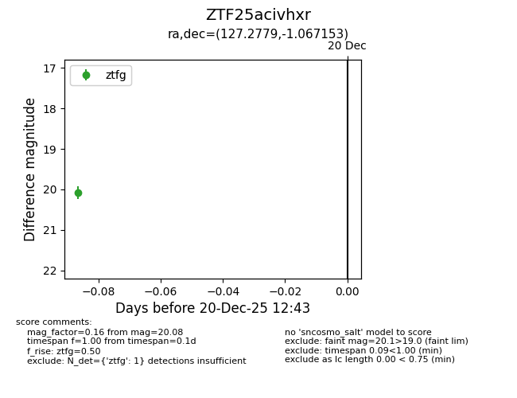
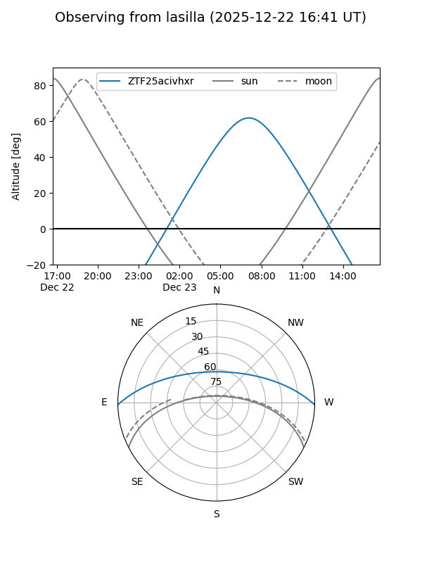
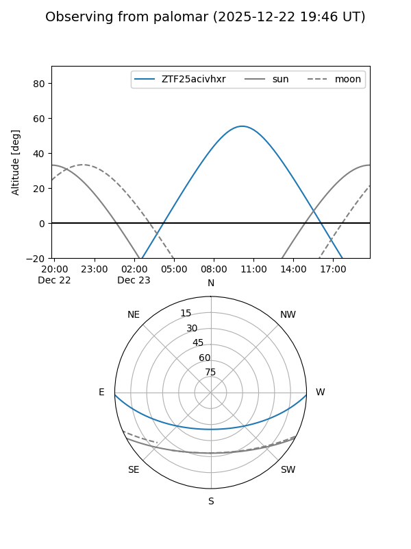
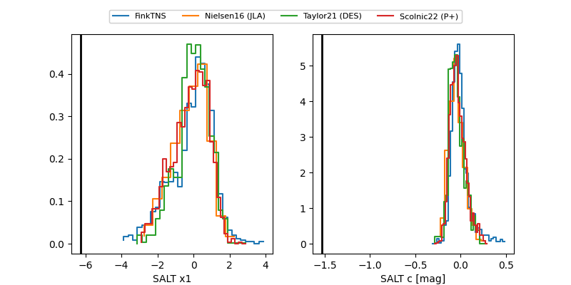

ZTF25acivhxr
Target ZTF25acivhxr at 2025-12-29 10:16
Aliases and brokers:
FINK: fink-portal.org/ZTF25acivhxr
Lasair: lasair-ztf.lsst.ac.uk/objects/ZTF25acivhxr
ALeRCE: alerce.online/object/ZTF25acivhxr
alt names
ZTF25acivhxr (ztf,fink_ztf)
Coordinates:
equatorial (ra, dec) = 127.2779,-1.06715
equatorial (HMS+DMS) = 08:29:06.69,-01:04:01.75
galactic (l, b) = (225.6247,+21.06103)
Flags:
Photometry:
last ztfg=19.95
3 ztfg detections
Lightcurve

Visibility


Additional plots
